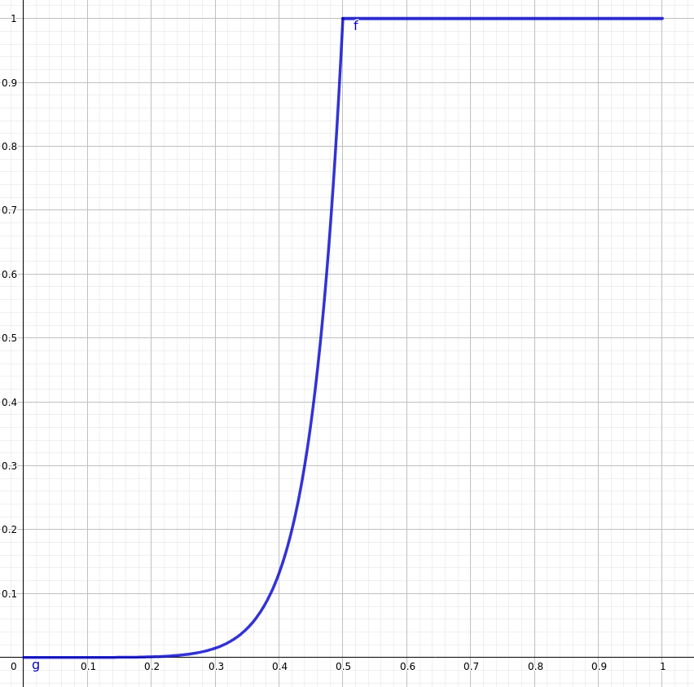

Πόσο Συνεχής είναι μια Παράγωγος;#
![Ο πίνακας *Τα λιβάδια της Genevilliers* του `Gustave Caillebotte <https://en.wikipedia.org/wiki/Gustave_Caillebotte>`__.](_static/images/uploads/2023/03/cantor_def_02.png,_static/images/uploads/2023/03/rationals_characteristic_01.png,_static/images/uploads/2023/03/func_def_03.png,_static/images/uploads/2023/03/cantor_def_04.png,_static/images/uploads/2023/03/riemann_int_def_func_01-1.png,_static/images/uploads/2023/03/1277px-gustave_caillebotte_-_the_plain_of_gennevilliers_yellow_fields_-_google_art_project.jpg,_static/images/uploads/2023/03/riemann_int_def_func_01.png,_static/images/uploads/2023/03/riemann_int_def_func_03.png,_static/images/uploads/2023/03/func_def_02-1.png,_static/images/uploads/2023/03/func_def_05.png,_static/images/uploads/2023/03/func_def_02.png,_static/images/uploads/2023/03/cantor_def_01.png,_static/images/uploads/2023/03/riemann_int_def_func_02.png,_static/images/uploads/2023/03/func_def_01.png,_static/images/uploads/2023/03/func_def_04.png,_static/images/uploads/2023/03/lebesgue_def_02.png,_static/images/uploads/2023/03/cantor_def_03.png,_static/images/uploads/2023/03/lebesgue_def_02-1.png,_static/images/uploads/2023/03/lebesgue_def_01.png,_static/images/uploads/2023/03/cantor_def_04-1.png,_static/images/uploads/2023/03/image.png,_static/images/uploads/2023/03/cantor_def_04-2.png,_static/images/uploads/2023/03/cantor_def_03-2.png,_static/images/uploads/2023/03/riemann_int_def_func_04.png,_static/images/uploads/2023/03/riemann_int_def_func_02-1.png,_static/images/uploads/2023/03/lebesgue_def_03.png,_static/images/uploads/2023/03/cantor_def_03-1.png)
Ο πίνακας Τα λιβάδια της Genevilliers του Gustave Caillebotte.#
Βλέπουμε διάφορες συναρτήσεις καθώς διδάσκουμε. Άλλες είναι παραγωγίσιμες - μια, δυο, τρεις ή και άπειρες φορές - άλλες όχι. Άλλες είναι συνεχείς, άλλες όχι. Αλλά, όλες τους, λίγο έως πολύ, βλέπονται. Δηλαδή, με τον έναν ή τον άλλο τρόπο, μπορούμε να πάρουμε τις βασικές όμορφες συναρτήσεις που ξέρουμε - ημίτονα, συνημίτονα, πολυώνυμα, εκθετικές, λογαριθμικές και όλα τα συναφή - να κάνουμε και πέντε-δέκα πράξεις μεταξύ τους και, «τσουπ!», να φτιάξουμε μία συνάρτηση κομμένη και ραμμένη στα μέτρα μας.
Πρόσφατα (τρόπος του λέγειν) είχαμε δει μάλιστα κι έναν τρόπο να βρίσκουμε τύπους συναρτήσεων που - έστω και «στο περίπου» - να έχουν μία δεδομένη γραφική παράσταση (δείτε εδώ για ένα φρεσκάρισμα). Αλλά, και πάλι, οι γραφικές παραστάσεις που εξετάσαμε ήταν, θα έλεγε κανείς, αρκετά «όμορφες». Τι γίνεται, όμως με εκείνες τις συναρτήσεις που είναι κάπως πιο «άσχημες»;
Μία Στρυφνή Συνάρτηση#
Θα ξεκινήσουμε την εξερεύνησή μας επιστρέφοντας λίγο στο παρελθόν και, για την ακρίβεια, στις 5 Μαρτίου του 2020. «Τι έγινε τότε;» θα αναρωτηθείτε, και με το δίκιο σας. Εκείνη την Πέμπτη θέσαμε μία ερώτηση που ακόμα δεν έχουμε απαντήσει:
Κι εδώ, ως γνήσιοι μαθηματικοί, θέτουμε το εξής ερώτημα: Μπορούμε να βρούμε μία συνάρτηση που να έχει παράγουσα, να μην είναι ολοκληρώσιμη σε ένα κλειστό διάστημα και, επιπρόσθετα, να είναι και φραγμένη; Αναμείνατε για το Β’ μέρος της σειράς…
Εμείς, κάποτε.
Αυτό το «Βʹ μέρος της σειράς» άργησε, αλλά τελικά ήρθε και είναι εδώ (ενωμένο δυνατό, θα συμπληρώναμε στο προεκλογικό κλίμα των ημερών). Είχαμε εξερευνήσει, τότε, τις διαφορές ανάμεσα στις ολοκληρώσιμες συναρτήσεις και εκείνες που μπορούν να προκύψουν ως παράγωγος κάποιας άλλης συνάρτησης - δείτε εδώ για ένα ρετούς. Συνοπτικά, είχαμε δει ότι μπορούμε σχετικά εύκολα να κατασκευάσουμε συναρτήσεις που να είναι ολοκληρώσιμες αλλά να μην έχουν παράγουσα, αλλά και το αντίστροφο. Δηλαδή, βρήκαμε μία συνάρτηση \(f\) που, ενώ είχε παράγουσα και ήταν ορισμένη σε κάποιο κλειστό διάστημα, δεν ήταν ολοκληρώσιμη. Για την ακρίβεια, αυτή η συνάρτηση ήταν η παρακάτω:
Η γραφική της παράσταση, όπως υποπτεύεστε, είναι αρκετά άκομψη:
{kind=link}

Εντάξει, δεν είναι και ό,τι πιο ωραίο έχετε δει.#
Τώρα, το γιατί δεν είναι ολοκληρώσιμη είναι σαφές καθώς, εξ ορισμού, μία συνάρτηση για να είναι ολοκληρώσιμη πρέπει να είναι και φραγμένη - ενώ η παραπάνω συνάρτηση, προφανώς, δεν είναι. Το γιατί έχει παράγουσα είναι επίσης σαφές αν τώρα κοντά δίνετε πανελλαδικές, καθώς αυτή δεν είναι παρά η παράγωγος της γνωστής και μη εξαιρετέας:
Όμως, είναι κάπως σαν να κλέψαμε παραπάνω, καθώς εξασφαλίσαμε τη μη ολοκληρωσιμότητα της συνάρτησής μας με το να «κάψουμε» μία από τις βασικές απαιτήσεις του ορισμού - να είναι φραγμένη η συνάρτησή μας. Από εδώ ορμώμενοι θέσαμε και το παραπάνω ερώτημα τότε: μπορούμε να κάνουμε την ίδια δουλειά αλλά με μία φραγμένη παράγωγο αυτή τη φορά;
Συζητώντας με τον Riemann.#
Πριν ξεκινήσουμε να περιπλανιόμαστε στα αχανή μονοπάτια των άσχημων, άκομψων, πλην όμως άκρως ενδιαφερουσών συναρτήσεων, θα κάνουμε πρώτα μία μικρή συζήτηση με ένα από τους πρωτεργάτες του ολοκληρωτικού λογισμού: τον Bernhard Riemann. Βασικά, επειδή ο Riemann, πέρα από πρωτεργάτης του ολοκληρωτικού λογισμού είναι και μακαρίτης, θα προσπαθήσουμε να «μιλήσουμε» λίγο με τον ορισμό του ολοκληρώματος Riemann.
Βασικά, όχι, ο ορισμός του ολοκληρώματος είναι πολύ τυπικός - έχουμε πάρει μία ιδέα στο παρελθόν. Θα συζητήσουμε λίγο με την ιδέα πίσω από τον ορισμό του ολοκληρώματος Riemann. Ας πάρουμε μία συνάρτηση με γραφική παράσταση όπως αυτή που φαίνεται παρακάτω:

Πόσο πιο τετριμμένη συνάρτηση, πια;#
Ενδιαφερόμαστε να υπολογίσουμε το εμβαδό ανάμεσα στη γραφική παράσταση της \(f,\) τον άξονα \(xʹx\) και τις ευθείες \(x=a,x=b.\) Εμείς, όμως, δε γνωρίζουμε και πολλά για το πώς υπολογίζουμε τόσο παράξενα εμβαδά. Τα μόνα που έχουμε δει στο σχολείο είναι κάτι ορθογώνια, κάτι τρίγωνα, άντε και κάτι κύκλους, από καμπύλες. Όπως κάνουμε, όμως, πάντα στα μαθηματικά, θα ξεκινήσουμε από τα γνωστά και θα φτάσουμε στα άγνωστα (ή έτσι ελπίζουμε, τουλάχιστον). Σχεδιάζουμε, λοιπόν, κάποια ορθογώνια που ελπίζουμε να μας βοηθήσουν σε αυτήν την προσπάθεια:

Οκτώ μικρά κι αθώα ορθογώνια…#
Η ιδέα πίσω από το παραπάνω σχήμα είναι αρκετά απλή:
Κόβουμε το διάστημα \([a,b]\) σε \(n\) ίσου μήκους διαστήματα με μήκος \(\Delta x=\frac{b-a}{n}\) - εδώ πήραμε \(n=8.\)
Διαλέγουμε στην τύχη κάποια σημεία μέσα σε αυτά τα ορθογώνια - εδώ πήραμε τα κέντρα για να είναι όμορφο το σχήμα μας, αλλά δεν παίζει και πολύ ρόλο αυτό. Αυτά τα σημεία τα ονομάζουμε \(\xi_k.\)
Σχεδιάζουμε ορθογώνια με πλάτος \(\Delta x\) και ύψος \(f(\xi_k)\) έτσι ώστε η βάση καθενός ορθογωνίου να συμπίπτει με ένα από τα διαστήματα που σχεδιάσαμε.
Όπως βλέπετε και παραπάνω, αυτή η διαδικασία μας οδηγεί σε ένα μπλε χωρίο το οποίο μπορεί να μην έχει ακριβώς το σχήμα του χωρίου που μας ενδιαφέρει αλλά, εντάξει, είναι μία πρώτη προσπάθεια. Το γαλάζιο εμβαδό παραπάνω είναι ίσο με:
Αυτό είναι αρκετά σαφές, καθώς καθένα από τα ορθογωνιάκια έχει εμβαδό \(f(\xi_k)\Delta x,\) οπότε αν τα αθροίσουμε θα πάρουμε το συνολικό εμβαδό του χωρίου.
Ας πάμε τώρα να κάνουμε ό,τι κάνουν οι μαθηματικοί σε αυτές τις περιπτώσεις: θα υπερβάλλουμε. Για την ακρίβεια, γιατί να περιοριστούμε σε 8 ορθογώνια, όταν μπορούμε να σχεδιάσουμε 108; Εντάξει, 108 βαριόμαστε να σχεδιάσουμε, αλλά μπορούμε να σχεδιάσουμε 18, όπως στο παρακάτω σχήμα:

Κι άλλα ορθογώνια…#
Το βλέπετε που πάει το πράγμα. Καθώς επιλέγουμε περισσότερα ορθογώνια, δηλαδή, καθώς μικραίνουμε το πλάτος τους, \(\Delta x,\) πετυχαίνουμε μία ολοένα και καλύτερη προσέγγιση του εμβαδού της συνάρτησής μας. Σε αυτό το σημείο κάπου, ο κύριος Riemann έρχεται και λέει (κάπως έτσι πρέπει να έγινε, δηλαδή) «Ε, ωραία, αν λοιπόν πάρω άπειρα ορθογώνια, αν δηλαδή το \(\Delta x\to0\) τι θα πάρω;». Και κάπως έτσι γεννιέται το ακόλουθο όριο, που μπορούμε να το γράψουμε με δύο τρόπους:
Αυτό το όριο, όταν υπάρχει, θα συμπίπτει (φαντάστηκε ο μακαρίτης) με το πολυπόθητο εμβαδό. Έτσι, όταν αυτό το όριο υπάρχει θα το συμβολίζουμε με:
και θα το αποκαλούμε, όπως ξέρετε, *ολοκλήρωμα της \(f\) από το \(a\) στο \(b\) *. Αν η συνάρτηση είναι και μη αρνητική, τότε αυτό το φοβερό και τρομερό όριο μπορεί να αναπαραστήσει και το εμβαδό κάτω από τη γραφική παράσταση της συνάρτησης στο εν λόγω διάστημα.
Κύριε Riemann, τι μπορείτε να ολοκληρώσετε;#
Όχι, αυτό δεν είναι μέρος της αξιολόγησης του μακαρίτη του Riemann, είναι μία πολύ πρακτική ερώτηση. Μιλήσαμε λίγες γραμμές παραπάνω για ένα όριο. Ωραία, τα όριο, όπως ξέρουμε πάρα πολύ καλά, κάποτε υπάρχουν, κάποτε δεν υπάρχουν και κάποτε δεν έχουν νόημα. Ας πούμε ότι εμείς περιοριζόμαστε σε εκείνες τις περιπτώσεις που το παραπάνω όριο έχει σίγουρα νόημα - δηλαδή τις φραγμένες συναρτήσεις σε ένα κλειστό διάστημα. Τότε, για ποιες συναρτήσεις υπάρχει το παραπάνω όριο; Για ποιες, δηλαδή, συναρτήσεις, μπορούμε να πάρουμε το πεδίο ορισμού τους, να πάρουμε κι ένα μαχαίρι και να αρχίσουμε να το πετσοκόβουμε μέχρι που να βρούμε το ολοκλήρωμα που θέλουμε;
Ας ξεκινήσουμε από τα εύκολα. Αν πάρουμε μία συνάρτηση που να είναι συνεχής στο εν λόγω διάστημα τότε όλα φαίνεται να μπορούνε να πάνε όπως τα φανταζόμαστε. Πράγματι, αν και δε θα δώσουμε εδώ την απόδειξη, τα πράγματα είναι σχετικά απλά. Πάντα έχει νόημα το ψιλόκομμα που κάναμε παραπάνω και πάντα τα πράγματα κυλάνε «ομαλά». Για να δείτε αυτήν την ομαλότητα, σκεφτείτε λίγο τι μας λέει ο ορισμός της συνέχειας (ακόμα και ο σχολικός). Μία συνάρτηση \(f\) είναι συνεχής στο \(x_0\) (του πεδίου ορισμού της, για να μην ξεχνιόμαστε) αν ισχύει το παρακάτω:
Δηλαδή, η \(f\) πρέπει κοντά στο \(x_0\) να μην αρχίζει να τρελαίνεται, αλλά να παίρνει τιμές εκεί κοντά στο \(f(x_0).\) Συνεπώς, καθώς εμείς ψιλοκόβουμε αυτά τα ορθογώνια, από ένα σημείο και μετά, επειδή αυτά θα είναι αρκετά «στενά», όλες οι τιμές σε κάθε τέτοιο διάστημα, ε, θα είναι περίπου ίσες. Δηλαδή, σε ένα αρκετά στενό διαστηματάκι \(I_k,\) θα ισχύει για κάθε \(x\in I_k\) ότι \(f(x)\approx f(\xi_k).\) Άρα, αν στενέψουμε αρκετά τα ορθογωνιάκια μας, αυτό το άθροισμα που βλέπουμε παραπάνω θα αρχίσει να γίνεται όλο και πιο «βαρετό», καθώς θα αρχίσει να γίνεται «σχεδόν» σταθερό. Όλο αυτό δεν είναι παρά μία πολύ χαλαρή περιγραφή μιας συμπεριφοράς σύγκλισης - εντάξει, υπάρχουν συνεχείς συναρτήσεις που μπορούν να προκαλέσουν πολύ αυτήν την περιγραφή που δώσαμε, αλλά έτσι έχει μακροσκοπικά η κατάσταση.
Επομένως, πάει, το λύσαμε, οι συνεχείς (και φραγμένες) συναρτήσεις είναι όλες τους ολοκληρώσιμες. Τι γίνεται όμως με τις ασυνεχείς; Όπως και πριν, ας ξεκινήσουμε με ένα σχήμα:

Από δυο «χωρία» χωριάτες - μα, τι χιούμορ!#
Εμείς θα θέλαμε να υπολογίσουμε το άθροισμα του κόκκινου και του γαλάζιου χωρίου, όπως φαντάζεστε. Μπορεί να φαίνεται αφελές, αλλά γιατί να μην υπολογίσουμε ξεχωριστά τα εμβαδά των χωρίων Α και Β και μετά απλώς να τα προσθέσουμε;
Κάποιος πολύ σχολαστικός θα πει ότι το χωρίο Α αντιστοιχεί σε ένα τμήμα της συνάρτησης που δεν είναι ορισμένο σε ένα κλειστό διάστημα - το \([a,x_0)\) στην προκειμένη. Πράγματι, αυστηρά μιλώντας, δεν έχουμε μιλήσει για ολοκληρώματα σε μη κλειστά διαστήματα, επομένως κάπως πρέπει να ξεπεράσουμε αυτή την, ομολογουμένως αυστηρή, αγκύλωση. Ας δούμε λίγο την παρακάτω συνάρτηση:
Τι το ενδιαφέρον έχει η παραπάνω συνάρτηση; Αρχικά, σχεδόν παντού είναι η ίδια με την \(f\) εκτός από το \(x_0\) όπου της έχουμε δώσει την τιμή του αριστερού πλευρικού ορίου της \(f\) στο \(x_0.\) Ουσιαστικά, έχουμε πάει σε εκείνο το «λευκό» σημείο στο \(x_0\) και, με τον μαρκαδόρο μας, έχουμε γεμίσει το σημείο με κόκκινο χρώμα. Πιο φορμαλιστικά, η συνάρτηση \(g\) είναι αυτό που λέμε η συνεχής επέκταση στο \([a,x_0]\) του περιορισμού της \(f\) στο \([a,x_0).\) Έτσι, μπορούμε να μιλήσουμε κανονικά για το ολοκλήρωμα της \(g\) το οποίο, φυσιολογικά, αναπαριστά το εμβαδό του κόκκινου χωρίου παραπάνω. Επομένως, σε αυτήν την περίπτωση μπορούμε να πούμε ότι ορίζουμε στο ημιάνοικτο διάστημα \([a,x_0)\) το ολοκλήρωμα της \(f\) ως εξής:
Γενικότερα, μπορούμε να πούμε ότι ορίζουμε, σε περιπτώσεις που υπάρχουν τα αντίστοιχα πλευρικά όρια, το ολοκλήρωμα μίας συνάρτησης \(f\) σε ένα διάστημα \((a,b)\) ως εξής:
όπου:
Έτσι, μπορούμε να μιλάμε και για ολοκληρώματα συναρτήσεων σε ανοικτά διαστήματα, αρκεί τα πλευρικά όρια στα ανοικτά άκρα να υπάρχουν και να είναι πραγματικοί αριθμοί.
Τώρα, αφού το κάναμε για μία ασυνέχεια, τις μας εμποδίζει να το κάνουμε και για δύο ή για τρεις; Τίποτα. Συνεπώς, αν οι ασυνέχειες μίας συνάρτησης είναι λίγες - δηλαδή, πεπερασμένες - μπορούμε να μιλήσουμε κανονικά για το ολοκλήρωμά της, απλώς υπολογίζοντας τα επιμέρους ολοκληρώματα στα διαστήματα που αυτή είναι συνεχής.
Τι γίνεται όμως με συναρτήσεις που έχουν άπειρες ασυνέχειες;
Κύριε Lebesgue, εσείς τι λέτε;#
Ας βάλουμε κι άλλον έναν μακαρίτη στη συζήτησή μας, τον Henri Lebesgue. Αλλά, όχι ακόμα, έχουμε να κάνουμε και μία εισαγωγή, πρώτα. Λοιπόν, αναρωτηθήκαμε πριν για την περίπτωση που έχουμε άπειρες ασυνέχειες. Ας πάρουμε ό,τι χειρότερο μπορούμε να σκεφτούμε, δηλαδή μία συνάρτηση που είναι ασυνεχής παντού, όπως η παρακάτω:
Χάλια, ε; Η παραπάνω συνάρτηση δεν είναι συνεχής σε κανένα σημείο του πεδίου ορισμού της, κι αυτό οφείλεται στην πυκνότητα των ρητών αριθμών - την οποία μπορείτε να θυμηθείτε αναλυτικότατα εδώ. Η ιδέα είναι ότι κοντά σε κάθε αριθμό η παραπάνω συνάρτηση παίρνει τόσο την τιμή 1 όσο και την τιμή 0, καθώς κοντά σε κάθε αριθμό υπάρχουν τόσο άρρητοι όσο και ρητοί. Επομένως, η συνάρτηση «ταλαντώνεται» γύρω από κάθε αριθμό και άρα δεν υπάρχουν τα όριά της πουθενά.
Θα φαντάζεστε ότι είναι πολύ δύσκολο να σχεδιάσουμε τη γραφική παράσταση μιας τέτοιας συνάρτησης, ωστόσο με θάρρος και παρρησία ισχυριζόμαστε ότι, αν μπορούσαμε να τη σχεδιάσουμε, θα έμοιαζε κάπως έτσι:

Μα, γιατί οι άρρητοι είναι τόσο περισσότεροι;#
Προφανώς, δε θα ήταν πεπερασμένα τα σημεία που αντιστοιχούν σε ρητές τιμές του \(x\) αλλά, τι να κάνουμε, δεν μπορούμε να σχεδιάσουμε άπειρες κουκκίδες σε ένα σχήμα - ακόμα, τουλάχιστον. Παρατηρήστε ότι οι κόκκινες κουκκίδες είναι πιο αραιές λόγω της αριθμησιμότητας των ρητών αριθμών.
Τώρα, όπως βλέπετε, αν πάμε εδώ να κάνουμε αυτά τα κόλπα με τα ορθογώνια που σιγά-σιγά λεπταίνουν και καθώς λεπταίνουν συγκλίνει το άθροισμα των εμβαδών τους σε έναν ωραίο αριθμό που λέμε ολοκλήρωμα, θα κάνουμε μία τρύπα στο νερό. Οι ρητοί αλλά και οι άρρητοι είναι πυκνοί ανάμεσα στους πραγματικούς αριθμούς, όπως είπαμε, άρα δεν έχουμε καμία ελπίδα να πάρουμε ένα άθροισμα με καλή συμπεριφορά. Αν τα \(\xi_k\) που αναφέραμε παραπάνω τύχει να είναι όλα τους ρητοί, το εμβαδό που θα πάρουμε θα είναι \(1\) ενώ αν είναι όλα τους άρρητοι θα πάρουμε συνολικό εμβαδό \(0.\) Έτσι, ακριβώς λόγω αυτής της «ευαισθησίας» του αθροίσματός μας ως προς την επιλογή των \(\xi_k\) δεν μπορούμε να ισχυριστούμε ότι το άθροισμά μας θα συγκλίνει κάπου. Άρα, αυτή η συνάρτηση είναι ένα κομψό παράδειγμα μίας μη ολοκληρώσιμης συνάρτησης.
Έχουμε παρουσιάσει παραδείγματα τόσο ολοκληρώσιμων όσο και μη ολοκληρώσιμων συναρτήσεων και είδαμε ότι ίσως να υπάρχει μία κάποια σχέση με τη συνέχειά τους. Για την ακρίβεια, είδαμε αφενός ότι οι συνεχείς (και φραγμένες) συναρτήσεις είναι όλες τους ολοκληρώσιμες, ενώ οι παντού ασυνεχείς δεν είναι. Είδαμε και ότι λίγες ασυνέχειες δε χαλάνε τη δουλειά μας, αλλά, μία εύλογη ερώτηση είναι «πόσο λίγες»;
Ας θεωρήσουμε μία συνάρτηση \(f\) και ας συμβολίσουμε με \(A_f\) όχι το πεδίο ορισμού της - όπως θα είχαμε συνηθίσει - αλλά το σύνολο των σημείων ασυνέχειας στο πεδίο ορισμού της. Έτσι, για μία συνεχή συνάρτηση έχουμε \(A_f=\varnothing\) ενώ για μία παντού ασυνεχή συνάρτηση έχουμε \(A_f=D_f.\) Η εύλογη ερώτηση που μπορούμε να θέσουμε εδώ είναι: Έχει σχέση το πόσο μεγάλο είναι το \(A_f\) με το αν είναι η \(f\) ολοκληρώσιμη;
Ναι, έχει.
Henri Lebesgue, όχι και πολύ παλιά
Εδώ κάπου παρεμβλήθηκε ο κύριος Lebesgue, αν δεν το καταλάβατε. Εμφατικά, λοιπόν, μας λέει «Ναι». Ωραία, τι σχέση έχει όμως δε μας είπε, αυτό θα πρέπει να το βρούμε χωρίς τη βοήθεια του μακαρίτη. Λοιπόν, αρχικά, να θυμίσουμε ότι ένας τρόπος να μετρά κανείς το μέγεθος είναι αυτό που λέμε τα μέτρα. Έχουμε μιλήσει στο παρελθόν εκτενέστατα για το τι είναι ένα μέτρο σε διάφορες περιστάσεις (εδώ </docs/After-maths/αδύνατο-vs-απίθανο-μέρος-α>, εδώ, εδώ κι εδώ). Αλλά εδώ θα μας απασχολήσει ένα ιδιαίτερο μέτρο, που φέρει και το όνομα του αείμνηστου Lebesgue. Ο τυπικός ορισμός του μέτρου Lebesgue, που συνήθως το συμβολίζουμε με \(\lambda,\) είναι ο εξής:
όπου το \(A\) είναι ένα «καλό» σύνολο (δείτε εδώ για να θυμηθείτε τα «καλά» σύνολα σε αυτήν την περίπτωση), το \(\ell(I)\) συμβολίζει το μήκος ενός διαστήματος \(I\) και το \(\mathcal{I}\) είναι η συλλογή όλων των ανοικτών και φραγμένων διαστημάτων πραγματικών αριθμών.
Ωραία, δώσαμε τον ορισμό και ξεμπερδέψαμε με τις φορμαλιστικές μας υποχρεώσεις, ας τον εξηγήσουμε λίγο τώρα. Η ιδέα πίσω από το μέτρο Lebesgue είναι σχετικά απλή. Για ένα διάστημα, σκέφτηκε ο μακαρίτης, μπορούμε να μετρήσουμε το μήκος του αρκετά εύκολα, αφαιρώντας τα άκρα του. Έτσι, το διάστημα \([1,4]\) έχει μήκος \(4-1=3\) ενώ το διάστημα \((-2,4)\) έχει μήκος \(4-(-2)=6\) κ.λπ. Τι γίνεται όμως με λιγότερο «όμορφα» σύνολα, που δεν είναι θα και τόσο τακτοποιημένα;
Ο Lebesgue έδωσε μία απλή απάντηση. Θα πάρω ένα «καλό» σύνολο \(A,\) λέει, και πολλά ανοικτά διαστήματα έτσι ώστε αυτά να καλύπτουν όλο το σύνολο \(A\) - αυτό εκφράζει το \(A\subseteq\bigcup_{k=1}^\infty I_k.\) Θα μπορούσα να πω ότι το άθροισμα των μηκών των διαστημάτων που διάλεξα είναι και το μέγεθος του συνόλου \(A\) - αυτό εκφράζει το \(\sum_{k=1}^\infty\ell(I_k).\)
Όμως, λέει τότε ο Lebesgue κοιτώντας τον καθρέφτη του, μήπως είμαι λίγο αγύρτης; Αυτό που όρισα μόλις είναι πολύ «ευαίσθητο» ως προς το ποια διαστήματα θα διαλέξω. Αν αυτά είναι πολύ πλατιά, τότε και το σύνολό μου θα μετρηθεί ως μεγάλο. Επομένως, θα αρχίσω να μικραίνω τα διαστήματά μου όσο περισσότερο με παίρνει - εκεί αναφέρεται το \(\inf,\) δηλαδή το infimum. Με αυτόν τον τρόπο, θα έχω κάνει την καλύτερη δυνατή προσέγγιση του μεγέθους του \(A\) χρησιμοποιώντας μονάχα όμορφα ανοικτά διαστήματα.
Έτσι κάπως πρέπει να έγιναν τα πράγματα στο κεφάλι του Lebesgue. Και να μην έγιναν έτσι, δηλαδή, δεν πειράζει - αυτή είναι η ιδέα. Ας πάρουμε ένα παράδειγμα για να καταλάβουμε τώρα τι παίζεται. Θεωρούμε το σύνολο \(A=[0,2)\cup\{4,6\}.\) Αυτό το σύνολο μπορείτε να το θαυμάσετε παρακάτω:

Το σύνολό μας, όχι όμορφο, ούτε κι άσχημο.#
Ωραία, έχουμε ένα σύνολο που δεν είναι διάστημα, άρα θα πρέπει να πάρουμε μία κουβερτούλα από ανοικτά διαστήματα και να το σκεπάσουμε. Μία πρώτη απόπειρα είναι η εξής:

Μεγάλη κουβερτούλα…#
Τώρα εδώ δεν κάναμε καλή δουλειά. Δείτε όλα αυτά τα κομμάτια που βάψαμε γαλάζια αλλά δεν είναι ταυτόχρονα και κόκκινα. Πολλά, πάρα πολλά, και μας δίνουν μία λανθασμένη εικόνα για το μέγεθος του συνόλου μας. Επομένως, μπορούμε να αρχίσουμε να συρρικνώνουμε το κάλυμμά μας όπως φαίνεται παρακάτω:

Ζούμπηγμα: Η βασική ιδέα του Lebesgue.#
Αφού ο ορισμός μάς επιτρέπει να πάρουμε πολλά ανοικτά διαστήματα, αυτό ακριβώς και κάνουμε, παίρνοντας τρία διαστήματα για να αγκαλιάσουμε τα τρία «μέρη» του συνόλου μας. Έτσι, καθώς αγκαλιάζουμε όλο και πιο σφιχτά αυτά τα τρία τμήματα, θα πάρουμε, οριακά, μήκος ίσο με 2, καθώς τα δύο μονοσύνολα που έχουμε δεξιά μπορούν να αγκαλιαστούν από ένα οσοδήποτε μικρό ανοικτό διάστημα, ενώ το αριστερό «παχύ» διάστημα μπορεί να αγκαλιαστεί από ένα διάστημα μήκους οσοδήποτε κοντά στο 2. Συνεπώς, \(\lambda(A)=2.\)
Προφανώς, μπορεί κανείς να κατασκευάσει αρκετά παθολογικά και περίπλοκα σύνολα - και θα το κάνουμε - όπου η παραπάνω απλή λογική δεν είναι τόσο κατατοπιστική, αλλά αυτή είναι η γενικότερη ιδέα πίσω από τον ορισμό του μέτρου Lebesgue: μετράμε το μέγεθος χρησιμοποιώντας πολλά μικρά ανοικτά διαστηματάκια που σκεπάζουν σφιχτά το σύνολό μας.
Τώρα, θυμάστε από πού ξεκινήσαμε; Είχαμε την απορία αν με κάποιον τρόπο η συνέχεια μίας συνάρτησης προβλέπει την ολοκληρωσιμότητά της - και, αν ναι, με ποιον τρόπο. Με τη βοήθεια του παραπάνω εργαλείου, μπορούμε να δώσουμε μία ακριβέστατη απάντηση:
Μία συνάρτηση \(f ` είναι ολοκληρώσιμη σε ένα διάστημα :math:`I\) αν και μόνο αν το σύνολο των ασυνεχειών της στο \(I,\) \(A_f,\) έχει μέτρο Lebesgue ίσο με το μηδέν.
Κομψότατος χαρακτηρισμός. Δε θα τον αποδείξουμε, γιατί θα ξεφύγουμε πολύ από τον στόχο μας (ο οποίος είναι;) αλλά θα δώσουμε λίγο τη διαίσθηση πίσω από αυτόν. Αρχικά, αντί για «μέτρο Lebesgue ίσο με το μηδέν» είναι κάπως πιο εύκολο να σκεφτόμαστε «μικρό». Δηλαδή, τα «μηδενικά» σύνολα μπορούμε άφοβα να τα σκεφτόμαστε ως «μικρά» (ως προς το «μήκος» τους, βέβαια, όχι ως προς τον πληθάριθμό τους). Επομένως, αν το σύνολο των ασυνεχειών μίας συνάρτησης είναι μικρό, με την έννοια που δίνει ο Lebesgue στο μέγεθος, τότε δε χαλάνε την ολοκληρωσιμότητα της συνάρτησής μας. Αν όμως αυτό το σύνολο έχει κάποιο μη αμελητέο «μήκος» τότε όλα καταρρέουν. Ουσιαστικά, αν οι ασυνέχειες έχουν κάποιον «όγκο» μέσα στο πεδίο ορισμού της συνάρτησής μας και αυτό κάπως χαλάει τα ορθογώνια που θέλει ο κύριος Riemann να κατασκευάσει, ακριβώς όπως παραπάνω οι διαρκείς «εναλλαγές» ρητών και αρρήτων πάλι χαλάνε τα πράγματα.
Έχουμε χρησιμοποιήσει αδιάκριτα τους όρους «όγκο», «μήκος» και «μέγεθος» για να μιλήσουμε για το τι μετράει το μέτρο Lebesgue. Δεν το κάναμε από αμέλεια, αλλά γιατί, ανάλογα με τις προθέσεις μας, το μέτρο Lebesgue μπορεί να τα μετρήσει όλα αυτά.
Ουφ! Μα, πού είναι ο Cantor;#
«Όπου γάμος και χαρά, η Βασίλω πρώτη», λένε στο χωριό μου - μπορεί και αλλού. Μιλάμε τόσην ώρα για πράγματα που αφορούν άμεσα και δραστικά τους πραγματικούς αριθμούς και τις βασικές ιδιότητές τους. Θα μπορούσε από αυτό το πραγματικό πανηγύρι να λείπει ο Cantor; - μακαρίτης κι αυτός· τα «Υπέρ Αναπαύσεως» διαβάζουμε σήμερα. Πριν όμως τον φωνάξουμε κι αυτόν - άλλο που ήρθε μόνος του - ας συνοψίσουμε τι έχουμε δει ως τώρα:
Είδαμε την ιδέα πίσω από τον ορισμό του ολοκληρώματος του Riemann, που, λίγο έως πολύ, συνίσταται στο να «σπάσουμε» την καμπύλη μας σε μία τεθλασμένη γραμμή και να υπολογίσουμε εμβαδά μικρών ορθογωνίων.
Μετά, είδαμε τον τρόπο που ο Lebesgue σκαρφίστηκε για να μετρήσει το μέγεθος αρκετών συνόλων πραγματικών αριθμών που δεν είναι, δα, και τόσο όμορφα.
Συνδυάζοντας αυτά τα δύο, είδαμε πώς μπορούμε να περιγράψουμε πλήρως τις ολοκληρώσιμες συναρτήσεις μέσω των ασυνεχειών τους που, κατά τον Lebesgue, πρέπει να είναι «λίγες».
Αυτά, συνοπτικά. Εμείς τώρα, γιατί τα λέμε όλα αυτά; Γιατί, αν δε θυμάστε, θέλουμε να κατασκευάσουμε μία συνάρτηση που να έχει παράγουσα, να είναι και φραγμένη, αλλά να μην είναι ολοκληρώσιμη σε ένα διάστημα του πεδίου ορισμού της. Όπως και την προηγούμενη φορά, θα κατασκευάσουμε αυτή τη συνάρτηση μέσω της παράγουσάς της. Δηλαδή, θα βρούμε μία συνάρτηση \(F\) που η παράγωγός της θα είναι φραγμένη αλλά όχι και ολοκληρώσιμη. Με άλλα λόγια, με βάση όλα τα παραπάνω, θα κατασκευάσουμε μία συνάρτηση \(F\) έτσι ώστε:
Η \(F\) να είναι παραγωγίσιμη.
Η \(Fʹ\) να είναι φραγμένη.
Η \(Fʹ\) να είναι ασυνεχής σε κάποιο σύνολο με μέτρο Lebesgue θετικό.
Η τελευταία συνθήκη θα μας εξασφαλίσει και τη μη ολοκληρωσιμότητα και, επιτέλους, τη λύτρωση. Εδώ κάπου θα έρθει ο κύριος Cantor. Αν δεν το ξέρετε, ο μακαρίτης έχει περάσει πολλά χρόνια της ζωής του έγκλειστος σε τρελοκομεία, οπότε να ετοιμαστείτε για αρκετά περίπλοκα - πλην όμως, κομψά - επιχειρήματα.
Λοιπόν, ο Cantor, καθώς έπαιζε με τα άπειρα, τα πεπερασμένα, τους πραγματικούς αριθμούς και όλα αυτά τα πράγματα που παίζουν οι μαθηματικοί, έφτιαξε ένα αρκετά ενδιαφέρον σύνολο. Το σύνολο αυτό κατασκευάζεται σε βήματα (άπειρα, βέβαια, στο πλήθος) και η κατασκευή του είναι η ακόλουθη.
Αρχικά, παίρνουμε το αγαπημένο μας κλειστό διάστημα \([0,1]\) και πετάμε το μεσαίο τρίτο του, όπως φαίνεται παρακάτω:

Απλά τα πράγματα στο μυαλό του Cantor, προς το παρόν.#
Εύκολο το πρώτο βήμα, πάμε τώρα για το δεύτερο. Τίποτα το σπουδαίο δεν έκανε ο Cantor, είναι η αλήθεια, παρά, όπως με ειδοποιεί από το κοντρόλ, να πετάξει από τα δύο μπλε τμήματα το μεσαίο τρίτο τους, όπως φαίνεται παρακάτω:

Ράβε, ξύλωνε, ράβε, ξύλωνε…#
Κι εδώ κάπου ο Cantor λέει: «Καλά, ρε, συ, αυτό μπορώ να το ξανακάνω!» Και το ξανακάνει. Και ξανά, και ξανά, και ξανά. Κι αφού κανείς πειστεί ότι μπορεί συνεχώς από κάθε γαλάζιο κομματάκι που απομένει να πετάξει το μεσαίο τρίτο του, εύλογα - τουλάχιστον για τον Cantor - φτάνει στο ερώτημα: και τι μου μένει στο τέλος;
Το «τέλος» παραπάνω, αναφέρεται σαφώς στο όριο αυτής της διαδικασίας στο άπειρο - δηλαδή, αν αφαιρέσουμε την ένωση όλων αυτών των κόκκινων συνόλων. Δεδομένου ότι τα κοκκινάκια φαίνεται να είναι αρκετά πιο μεγάλα, τελικά, σε σχέση με τα μπλεδάκια, μία πρόχειρη απάντηση θα ήταν «λίγα πράγματα». Ωστόσο, ας ρίξουμε μία καλύτερη ματιά στην κατάσταση που έχουμε στα χέρια μας. Αρχικά, μπορούμε να εντοπίσουμε έναν αριθμό που να περιέχεται στο σύνολο Cantor;
[Σκέψεις]
Ναι, είναι η απάντηση - αρκετά προφανής, μάλιστα. Αν δείτε την παραπάνω διαδικασία, σε κάθε βήμα αφαιρούμε τα μεσαία τρίτα των γαλάζιων διαστημάτων μας, επομένως, σε κανένα βήμα μας δε θα αφαιρέσουμε τους αριθμούς 0 και 1. Έτσι, δύο αριθμοί που βρίσκονται στο τελικό μας σύνολο, ας του συμβολίσουμε με \(C,\) θα είναι το 0 και το 1. Επίσης, από κάθε γαλάζιο διαστηματάκι που θεωρούμε, ποτέ δε θα καταφέρουμε να πετάξουμε τα άκρα του, με το ίδιο ακριβώς σκεπτικό - άλλωστε, σε κάθε βήμα μας, επαναλαμβάνουμε αυτό το ψαλίδισμα που κάναμε και στο \([0,1].\) Έτσι, και όλοι οι αριθμοί της παρακάτω μορφής θα καταλήξουν μέσα στο \(C:\)
Αυτοί οι αριθμοί, όπως φαντάζεστε, αν και όλοι τους ρητοί, είναι αρκετά πολλοί, άπειροι, για την ακρίβεια. Επομένως, έχουμε άπειρους αριθμούς μέσα σε αυτό το φαινομενικά άδειο σύνολο.
Τα «παράδοξα» δεν σταματούν εδώ, ωστόσο. Στο σχήμα παρακάτω βλέπουμε μόνο τα κομμάτια που κρατάμε σε κάθε βήμα της κατασκευής του συνόλου Cantor μέχρι και το τέταρτο βήμα:

Πετραδάααακι, πεεετραδάαακι…#
Τώρα, ας σκεφτούμε λίγο έναν αριθμό που μένει μέσα στο σύνολο Cantor μέσα από όλη αυτή τη διαδικασία. Αυτό, όπως είπαμε, σημαίνει ότι επιβιώνει από όλα αυτά τα κοψίματα που κάνουμε, επομένως, σε κάθε βήμα μας αυτός ο αριθμός βρίσκεται σε ένα γαλάζιο κομματάκι. Φανταστείτε τώρα ότι έχουμε μπροστά μας, όπως παραπάνω, ένα άπειρο «χαλί» με όλα τα βήματα που θα κάνουμε. Μπορούμε τότε να μας φανταστούμε να περιπλανιόμαστε πάνω σε αυτό το χαλί με τον εξής τρόπο, ξεκινώντας από το \([0,1]\) με στόχο κάποιον αριθμό \(x\in C:\)

Περαπατώ-περπατώ εις το δάσος, όταν ο Cantor δεν είνʹ εδώ…#
Πρακτικά, ξεκινώντας από κάπου στο διάστημα \([0,1]\) δεν έχουμε παρά σε κάθε βήμα να επιλέξουμε αν θα πάμε στο αριστερό ή στο δεξί τρίτο. Έτσι, μπορούμε να πούμε ότι κάθε αριθμός που επιβιώνει στο σύνολο Cantor μπορεί να ταυτιστεί με ένα μονοπάτι σαν το παραπάνω. Άρα, αν καταφέρουμε να περιγράψουμε όλα αυτά τα μονοπάτια, θα έχουμε περιγράψει και όλους τους αριθμούς του συνόλου Cantor.
Εντάξει, η περιγραφή ενός τέτοιου μονοπατιού δεν είναι τόσο δύσκολη υπόθεση. Σε κάθε βήμα έχουμε να κάνουμε ακριβώς δύο επιλογές:
είτε πάμε στο αριστερό τρίτο,
είτε πάμε στο δεξί τρίτο.
Ας συμβολίσουμε την κίνηση προς τα αριστερά με 0 και την κίνηση προς τα δεξιά με 1. Τότε, κάθε τέτοιο μονοπάτι μπορεί να αναπαρασταθεί σαν μία (άπειρη) ακολουθία από 0 και 1, όπως για παράδειγμα η παρακάτω (που αντιστοιχεί και στο μονοπάτι που ζωγραφίσαμε):
0110…
Χμμμ… Τι μας θυμίζει αυτό; Ας βάλουμε μπροστά από όλες τις ακολουθίες μας ένα ακόμα μηδενικό, μαζί με μία υποδιαστολή, δηλαδή, την παραπάνω ακολουθία θα τη γράφουμε έτσι:
0.0110…
Ωραία, τώρα τα πράγματα είναι ξεκάθαρα. Οι αριθμοί, όπως γνωρίζουμε, μπορούν εκτός από το παραδοσιακό δεκαδικό σύστημα, να αναπαρασταθούν και χρησιμοποιώντας μονάχα 0 και 1 - αυτό που λέμε το δυαδικό σύστημα. Συνεπώς, αυτό που χαλαρά αποδείξαμε παραπάνω είναι ότι κάθε μονοπάτι στο παραπάνω σχήμα αντιστοιχεί ακριβώς σε έναν αριθμό στο διάστημα \([0,1].\) Επομένως, αφού τα μονοπάτια είναι όσοι και οι αριθμοί στο σύνολο του Cantor και τα μονοπάτια είναι και όσοι και οι αριθμοί στο \([0,1]\) είναι άμεσο ότι το σύνολο του Cantor περιέχει τόσους άριθμούς όσους και το \([0,1].\)
«Μα, εμείς πετάξαμε τόσα πράγματα» θα πείτε. Ε, ναι, πετάξαμε, αλλά, τελικά, αυτά που μας έμειναν δεν είναι, δα, και λίγα. Είναι τόσα πολλά όσοι και οι αριθμοί που είχαμε στην αρχή - συμβαίνει αυτό με τα άπειρα σύνολα, άλλωστε, δε συμβαίνει; Έχουμε, λοιπόν, ένα φαινομενικά μεγάλο σύνολο στα χέρια μας, το οποίο θα μας απασχολήσει άμεσα.
Ένας Παλιός Γνωστός…#
Ήρθε η ώρα να μιλήσουμε τώρα με έναν παλιό γνωστό. Θυμάστε την ακόλουθη συνάρτηση;
Σαφώς και τη θυμάστε, γιατί έχει αυτήν την κόμψότατη γραφική παράσταση:

Γνωστή και μη εξαιρετέα.#
Έχουμε δει πολλάκις στο παρελθόν ότι αυτή η συνάρτηση είναι ωραία, συνεχής, παραγωγίσιμη και έχει την ακόλουθη παράγωγο:
Η γραφική παράσταση της παραγώγου είναι η εξής:

Εεεε, τι είναι αυτά τώρα;#
Είναι επίσης σαφές ότι η παράγωγος είναι αρκετά προβληματική, ειδικά όσο πλησιάζουμε προς το μηδέν. Λογικό, καθώς εκείνο το συνημίτονο χαλάει όλη τη δουλειά. Ας παρατηρήσουμε ότι η \(fʹ\) είναι φραγμένη εκεί γύρω από το μηδέν ενώ είναι με ουσιαστικό τρόπο ασυνεχής στο μηδέν. Λέγοντας «με ουσιαστικό τρόπο» εννοούμε ότι δεν μπορούμε με κάποιον τρόπο να ορίσουμε την \(f\) στο μηδέν έτσι ώστε αυτή να είναι συνεχής εκεί. Αυτή την αλλοπρόσαλλη συμπεριφορά θα προσπαθήσουμε να εκμεταλλευτούμε για να φτιάξουμε μία πραγματικά άσχημη συνάρτηση.
Αρχικά, θα κόψουμε τη γραφική παράσταση της \(f\) και θα κρατήσουμε μόνο το κομμάτι της που ζει στο \([0,1]\) όπως φαίνεται παρακάτω:

Τώρα δεν τελειώνει η εποχή του κλαδέματος;#
Ωραία, και τώρα τι, θα πείτε; Λοιπόν, εμείς έχουμε μία συνάρτηση που είναι παραγωγίσιμη, με φραγμένη παράγωγο που είναι ασυνεχής στο μηδέν. Μπορούμε να κάνουμε μία μικρή τσαχπινιά τώρα, και να χαλάσουμε τη συνέχεια της παραγώγου και στο 1. Για να το πετύχουμε αυτό, μπορούμε «αφελώς» να θεωρήσουμε την ακόλουθη συνάρτηση:

Κοπτοραπτική, ξανά.#
Ο τύπος της παραπάνω συνάρτησης προκύπτει σχετικά εύκολα από αυτόν της \(f\) ως εξής:
Δεν είναι καμία σοφία αυτό που κάναμε, απλά πήγαμε στη μέση του διαστήματος και κάναμε μία ανάκλαση της γραφικής παράστασης της \(f\) ως προς την ευθεία \(x=1/2.\) Έτσι καταφέραμε να μεταφέρουμε όλη την κακή συμπεριφορά της \(f\) και στο 1. Δημιουργήσαμε όμως κι ένα πρόβλημα έτσι: χαλάσαμε την παραγωγίσιμότητα της συνάρτησής μας. Να, δείτε εκείνη τη μυτούλα στο \(x=1/2\) που προκύπτει από την άγαρμπη ανάκλασή μας: εκεί χαλάσαμε την παράγωγο της \(g.\)
Και τι μπορούμε να κάνουμε γιʹ αυτό;
[Διάλειμμα για καφέ και σκέψη]
Το κόλπο στην όλη υπόθεση είναι να μην πανικοβληθούμε. Αν παρατηρήσουμε λίγο την παραπάνω γραφική παράσταση θα δούμε ότι η ιδέα μας να κάνουμε αυτήν την ανάκλαση είναι στη σωστή κατεύθυνση, απλά θέλει μία μικρή τροποποίηση. Για την ακρίβεια, παρατηρήστε πώς η γραφική παράσταση της \(f\) παρουσιάζει άπειρα ακρότατα, τα οποία μάλιστα πυκνώνουν όσο πλησιάζουμε πιο κοντά στο μηδέν. Επομένως, αντί για την παραπάνω άγαρμπη ανάκλαση μπορούμε να κάνουμε το εξής:
Τσιμπάμε ένα ακρότατο της \(f\) που να βρίσκεται πριν (δηλαδή, αριστερά από) το 1/2.
Κόβουμε εκεί τη γραφική παράσταση.
Κάνουμε μία ανάκλαση ως προς την \(x=1/2.\)
Ενώνουμε τις δύο ανακλάσεις με ένα ευθύγραμμο τμήμα παράλληλο στον οριζόντιο άξονα.
Το αποτέλεσμα αυτής της ιδέας φαίνεται παρακάτω:

Την ισιώσαμε την κατάσταση.#
Παρατηρήστε τώρα πώς, αφού εμείς πήγαμε και «κολλήσαμε» δύο ακρότατα με μία οριζόντια γραμμή, η παραγωγισιμότητα πλέον δε χαλάει καθώς ο Fermat μάς λέει ότι σε ένα ακρότατο σε εσωτερικό του πεδίου ορισμού μίας συνάρτησης η παράγωγος (όταν υπάρχει) είναι ίση με το μηδέν. Επομένως, η παραπάνω παραλλαγή που σχεδιάσαμε είναι μία συνάρτηση που:
είναι ορισμένη σε κλειστό διάστημα,
μηδενίζει στα άκρα του διαστήματος,
είναι παραγωγίσιμη σε αυτό,
έχει φραγμένη παράγωγο,
έχει ασυνεχή παράγωγο στα άκρα του διαστήματος.
Σαφώς, αυτή η κατασκευή δεν μπορεί να γίνει αποκλειστικά στο \([0,1]\) αλλά σε οποιοδήποτε κλειστό διάστημα, με λίγο ζούληγμα και λίγο τράβηγμα. Τώρα, ας θυμηθούμε ξανά το σύνολο Cantor. Θυμάστε πώς το κατασκευάσαμε; Αν όχι, ρίξτε μια ματιά λίγο παραπάνω και θα το θυμηθείτε. Ουσιαστικά, ξεκινήσαμε από το \([0,1]\) και σε κάθε μας βήμα αφαιρούσαμε και κάποιο διάστημα. Μπορούμε να αποδείξουμε με σχετική ευκολία ότι αυτά τα διαστήματα μπορούμε να τα αριθμήσουμε, έστω \((a_n,b_n)\) για \(n\in\mathbb{N}.\) Θεωρούμε επίσης και τις συναρτήσεις \(f_n\) που ορίζονται στα κλειστά διαστήματα \([a_n,b_n]\) και έχουν όλες τις καλές ιδιότητες που καταγράψαμε παραπάνω (φραγμένη παράγωγο, ασυνεχή στα \(a_n,b_n\) και ρίζες τα \(a_n,b_n\) ).
Και τώρα θα κάνουμε το απονενοημένο διάβημα. Θεωρούμε τη συνάρτηση \(f\) που ορίζεται στο \([0,1]\) και:
είναι ίση με την αντίστοιχη συνάρτηση \(f_n\) σε κάθε κλειστό διάστημα \([a_n,b_n]\) και,
είναι ίση με το \(0\) οπουδήποτε αλλού.
Παρατηρήστε τώρα τα εξής:
Η \(f\) είναι παραγωγίσιμη, καθώς όλες αυτές οι μικρές συναρτήσεις είναι παραγωγίσιμες και στα \(a_n,b_n\) έχουν όλες τους παράγωγο ίση με το μηδέν, επομένως, μπορούμε να τις «κολλήσουμε» με μία σταθερή συνάρτηση.
Η \(fʹ\) είναι φραγμένη καθώς όλες αυτές οι μικρές συναρτήσεις είναι ομοιόμορφα φραγμένες από το 1 - άρα και η \(fʹ.\)
Η \(fʹ\) είναι ασυνεχής σε όλα τα σημεία του συνόλου Cantor.
Το τελευταίο θέλει κάποια προσοχή. Το ότι η \(fʹ\) είναι ασυνεχής στα \(a_n,b_n\) είναι προφανές από τον ίδιο τον ορισμό των \(f_n.\) Όμως, το σύνολο Cantor περιέχει κι άλλους αριθμούς πέρα από αυτούς - είναι, όπως είπαμε, υπεραριθμήσιμο, ενώ τα \(a_n,b_n\) είναι αριθμήσιμα στο πλήθος. Η βασική ιδέα, που θα αποφύγουμε να αποδείξουμε αυστηρά, βασίζεται στο ότι, όπως μπορείτε να δείτε και από τη διαδικασία κατασκευής του συνόλου Cantor, κάθε αριθμός του συνόλου Cantor μπορεί να προσεγγιστεί από «κόκκινους» αριθμούς, δηλαδή από αριθμούς που έχουμε πετάξει έξω από το ίδιο το σύνολο Cantor.
Αυτό ακριβώς επάγει και την ασυνέχεια σε κάθε σημείο του συνόλου Cantor. Αφενός, σε όλο το σύνολο Cantor έχουμε \(fʹ(x)=0\) - εξ ορισμού. Αφετέρου, έξω από το σύνολο Cantor αλλά πολύ κοντά σε κάθε σημείο του η παράγωγος ταλαντώνεται εκνευριστικά γρήγορα, οπότε και δε συγκλίνουν οι τιμές της προς κάποιον αριθμό - ειδικότερα, ούτε και προς το 0. Έτσι, η \(fʹ\) είναι ασυνεχής στο σύνολο Cantor.
Να θυμίσουμε κάπου εδώ ότι ο στόχος μας είναι να δείξουμε ότι η \(fʹ\) είναι μη ολοκληρώσιμη και άρα, στην περίπτωσή μας, ότι το μέτρο του συνόλου των ασυνεχειών της - εδώ, το σύνολο Cantor - είναι θετικό και όχι μηδέν. Πόσο, όμως, είναι το μέτρο του συνόλου Cantor;
Αφού η κατασκευή του \(C\) έγινε με «αρνητικό» τρόπο, δηλαδή, πετώντας πράγματα έξω από αυτό, αρνητικά θα γίνει και η αποτίμηση του μεγέθους του. Για την ακρίβεια, θα μετρήσουμε το μέγεθος των διαστημάτων που πετάξαμε. Ας το δούμε αυτό αναλυτικά:
Στο πρώτο βήμα πετάξαμε ένα (1) διάστημα με μήκος 1/3.
Στο δεύτερο βήμα πετάξαμε δύο (2) διαστήματα με μήκος 1/9.
Στο τρίτο βήμα πετάξαμε τέσσερα (4) διαστήματα με μήκος 1/27.
Γενικά, στο \(n\) -οστό βήμα πετάμε \(2^{n-1}\) διαστήματα με μήκος \(1/3^{n}.\) Συνεπώς, σε \(n\) -οστό βήμα πετάμε διαστήματα συνολικού μήκους \(2^{n-1}/3^n.\) Άρα, το συνολικό μήκος που πετάμε θα είναι ίσο με το ακόλουθο απλό άθροισμα γεωμετρικής σειράς:
Δηλαδή, το μήκος των διαστημάτων που πετάμε συνολικά είναι ίσο με 1. Όμως, και το μήκος του \([0,1]\) είναι ίσο με 1, επομένως, αυτό που μας μένει στο σύνολο Cantor έχει μέτρο Lebesgue \(\lambda(C)=0.\) Δηλαδή, για να γυρίσουμε και στα δικά μας, το σύνολο των ασυνεχειών αυτής της παραγώγου που κατασκευάσαμε έχει μέτρο Lebesgue ίσο με το μηδέν.
[Αμηχανία]
Τι, δηλαδή όλα αυτά τα κάναμε τσάμπα; Εμείς ένα πράγμα θέλαμε: να βγει το σύνολο των ασυνεχειών της παραγώγου «μεγάλο», δηλαδή να έχει θετικό μέτρο. Και αυτό που κατασκευάσαμε έχει μέτρο ίσο με το μηδέν! Μα, χάθηκε κι αυτός ο Cantor να φτιάξει ένα πιο μεγάλο σύνολο;
Ή μήπως έφτιαξε;
Περισσότερα την επόμενη Δευτέρα… Μέχρι τότε, υπομονή!
Καλημέρα και καλό διάβασμα!